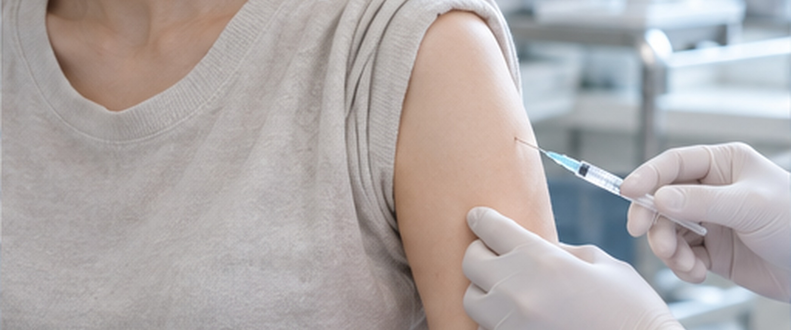
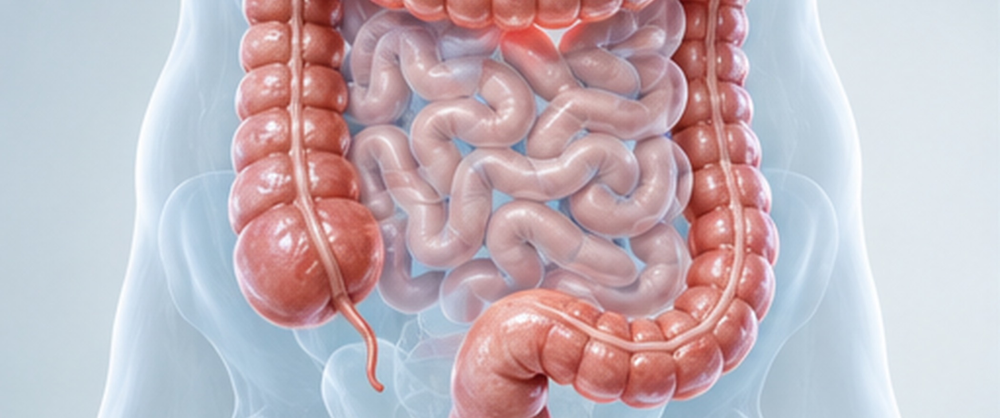
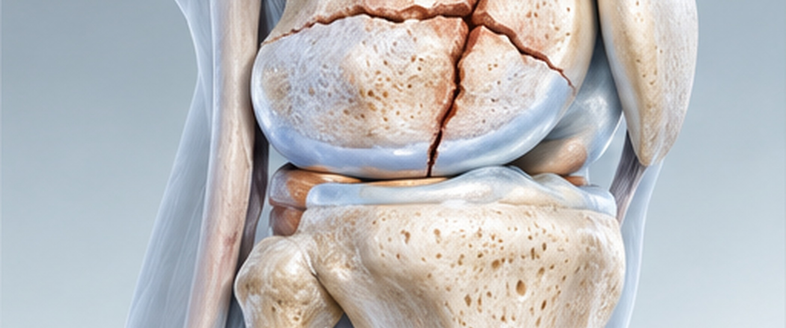
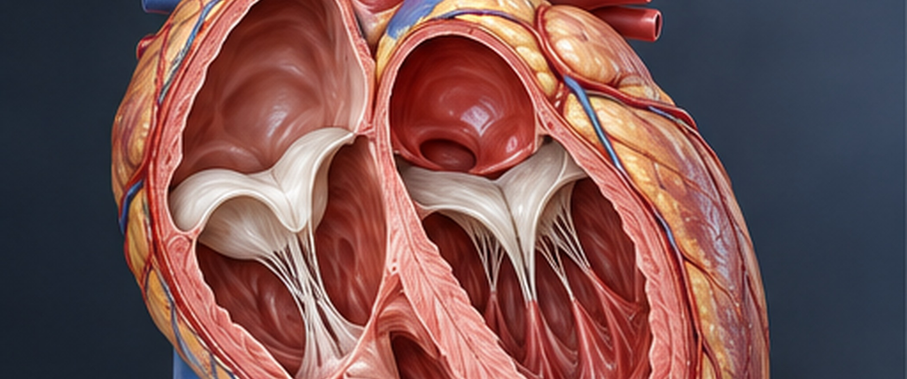
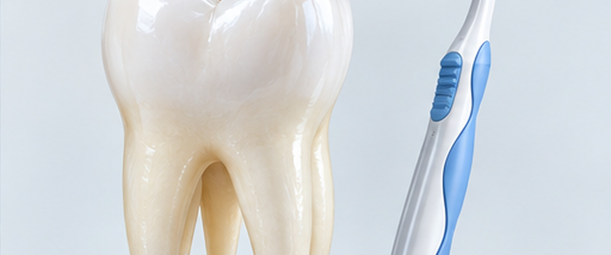
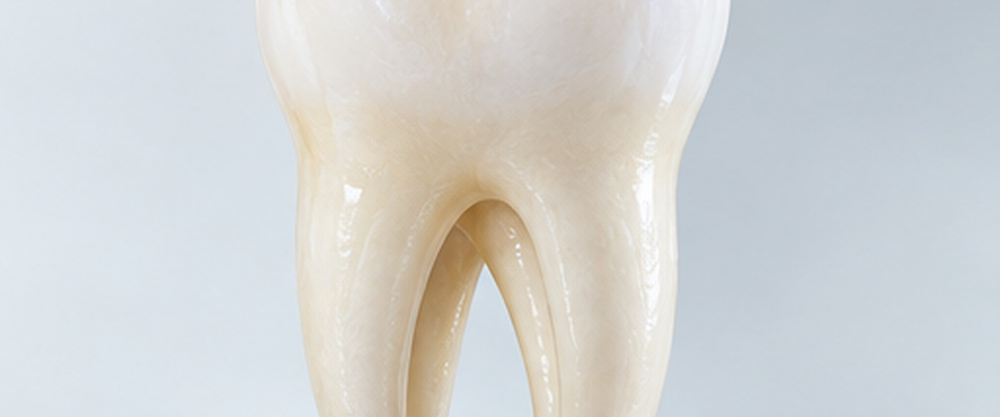
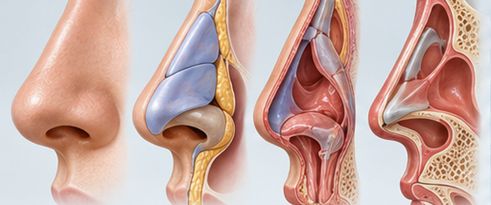

BAREUNSUP's Non-Surgical Treatment
작은 치료, 보존적 치료,
시술만으로도 최선의 만족을
느끼실 수 있도록 정성껏 치료합니다.
수술이 필요해도 되도록 작게 절개하는 것이
바른숲병원의 자긍심입니다.
비수술 치료
실시간 투시 영상 장비로 디스크와 척추 신경,
그 둘레 조직까지 자세히 들여다보며 치료합니다.
신경차단술
신경차단술
척추 둘레의 신경에 약을 넣어 통증 신호를 막고 염증을 가라앉히는 치료입니다. 국소 마취제에 스테로이드를 조금 섞어 쓰며, 척추나 신경 뿌리에서 오는 오래된 통증을 줄이려 할 때 합니다.

특징

국소마취

절개없음

없음

즉시가능

즉각개선

모두 가능
치료방법
신경성형술
신경성형술
들러붙은 신경이나 다친 부위에 특수 카테터(가는 관)를 넣어 붙은 곳을 떼어 내고 염증을 가라앉혀 통증 신호를 줄이는, 수술하지 않는 척추 치료입니다.
신경 둘레에 약을 넣거나 빈 공간을 만들어 눌린 신경을 풀어 주고, 신경이 제 기능을 찾는 데 도움이 됩니다.
특징
국소마취

최소침습
즉시가능
즉각개선
모두 가능
치료방법
신경풍선확장술
신경풍선확장술
신경이 지나는 좁아진 통로(추간공)에 풍선이 달린 카테터를 넣고, 풍선을 여러 번 부풀렸다 줄였다 하며 통로를 직접 넓혀 염증까지 가라앉히는 수술 없는 척추 치료입니다.

특징
국소마취
최소침습
즉시가능
즉각개선
모두 가능
치료방법
신경유착박리술
신경유착박리술
들러붙은 신경 둘레의 염증과 굳은 섬유 조직을 걷어 내 신경이 눌리지 않게 하고 통증을 줄이는, 수술 없는 척추 치료입니다. 꼬리뼈 쪽으로 척추 경막외강에 특수 카테터를 넣고, 실시간 영상으로 신경 통로를 보면서 아픈 곳까지 정확히 다가가 치료합니다.

특징
국소마취
최소침습
즉시가능
즉각개선
모두 가능
치료방법
경막외내시경신경성형술 (EEN)
경막외내시경신경성형술 (EEN)
꼬리뼈 쪽으로 척추 경막외강에 내시경을 넣어
신경 둘레의 유착과 염증을 눈으로 보면서 치료하는 비수술 치료입니다.

특징
국소마취
최소침습

30분 ~ 1시간
즉시가능
즉각개선
모두 가능
치료방법
척추체성형술
척추체성형술
골다공증 때문에 척추뼈가 주저앉은 환자를 짧은 시술로 치료하는 방법입니다. 굵은 바늘이나 특수 풍선으로 부러진 자리에 의료용 시멘트를 채워 뼈를 단단하게 받쳐 주고 통증을 덜어 줍니다.


특징
국소마취
최소침습
즉시가능
즉각개선
모두 가능
치료방법
고주파수핵감압술
고주파수핵감압술
디스크 안에 고주파 열을 보내 내부 압력을 낮추고, 신경을 누르던 튀어나온 부분을 줄여 통증을 덜어 주는 수술 없는 치료입니다.

특징
국소마취
최소침습
30분 ~ 1시간
즉시가능
즉각개선
모두 가능
치료방법
척추시술, 성공의 열쇠!
시술 경험이 많은 의료진의 실력입니다.
수많은 시술을 해 온 바른숲병원 의료진은 환자마다 상태를 꼼꼼히 따져 보고,
그에 맞는 치료법을 골라 좋은 결과로 이어지게 합니다.
디스크보다 신경의 염증과 유착을 먼저 치료하는 까닭이 있나요?
튀어나온 디스크나 좁아진 척추관은 그 안을 지나는 신경을 누릅니다.
눌린 신경은 자극을 받아 염증이 생기기 쉽고, 염증이 오래가면 신경 둘레가 굳으면서 주변 조직과 들러붙는 유착이 생깁니다.
들러붙은 신경은 몸을 움직일 때 함께 미끄러지지 못해 더 자극을 받고, 그 때문에 허리가 아프거나 다리가 저리고 시린 증상이 생기기도 합니다.
그래서 디스크가 얼마나 나왔는지도 봐야 하지만, 신경에 생긴 염증과 유착을 잘 다스리고 관리해야 통증이 줄고 신경이 더 다치는 것을 막을 수 있습니다.
디스크 하나만 볼 때보다 신경과 그 둘레 조직의 상태까지 같이 살피며 치료할 때 경과가 더 좋은 경우가 많습니다.
디스크, 내버려 두면 나아지나요?
"디스크는 놔두면 알아서 낫는다"는 이야기를 한 번쯤 들어 보셨을 겁니다.
실제로 가벼운 디스크는 시간이 흐르면서 몸이 스스로 회복해 염증이 가라앉고 증상이 누그러지기도 합니다.
그렇다고 디스크가 처음 모습으로 돌아가거나 아프기 전 상태로 되돌아가는 것은 아닙니다.
디스크가 저절로 나은 것처럼 느껴질 때도 실제로는 신경이 덜 눌리게 되었거나 염증이 가라앉아서 통증이 줄어든 경우가 대부분입니다.
꾸준히 스트레칭을 하고 자세를 바로잡거나 생활 습관을 바꾼 것이 좋아지는 데 보탬이 된 경우도 있습니다.
디스크 증상이 있다고 해서 꼭 시술이나 수술부터 받아야 하는 것은 아닙니다. 다만 오래 내버려 두면 통증이 심해지거나 신경이 더 다칠 수 있으니, 전문의에게 지금 상태가 어느 정도인지 정확히 진단받아 보시는 것이 좋습니다.
"알아서 낫겠지" 하고 마냥 기다리기보다 제때 관리하고 치료받으시길 권합니다.
추간공이 좁아지거나 막히면 어떤 증상이 생기나요?
추간공은 위아래 척추뼈 사이에 난 구멍으로, 척추에서 갈라진 신경근이 빠져나가는 길목입니다.
이 자리로 디스크가 밀려 나오거나 다른 문제가 생기면 신경이 눌려서, 한쪽 엉덩이나 다리로만 뻗치는 편측성 통증과
저림과 감각 이상, 힘 빠짐, 더딘 회복 같은 증상이 함께 생길 수 있습니다.
증상이 심하다면 서둘러 진단받고 치료를 시작해야 합니다.
추간공은 깊숙한 곳에 있어 다가가기 어려운 때가 많아서, 흔히 하는 치료로는 잘 듣지 않기도 합니다.
추간공내시경 시술은 옆구리 쪽으로 들어가 눌린 신경을 바로 보면서 치료할 수 있어 많이 쓰입니다.
통증이 심하거나 발목에 힘이 빠지는 증상이 있다면 미루지 마시고 바로 진료를 받아 치료를 시작하시는 것이 좋습니다.
디스크나 협착증이 어디에, 어떤 모양으로 생겼는지에 따라 허리 치료법도 바뀌나요?
네, 병이 생긴 자리와 모양을 보고 그에 맞는 치료 방법을 고릅니다.
척추는 구조가 무척 복잡해서, 병이 생긴 자리와 디스크가 밀려 나온 방향, 신경이 얼마나 눌렸는지를 하나하나 따져 본 뒤 가장 알맞은 치료를 정합니다.
예컨대 디스크가 척추 뒤편(후궁간)에 자리 잡고 있다면, 등 쪽으로 들어가는 후궁간내시경 시술로 문제가 된 부분을 곧바로 떼어 낼 수 있습니다.
디스크가 신경이 빠져나가는 통로(추간공) 쪽으로 나와 있다면 추간공으로 다가가는 방법을 쓰는데, 이때는 옆구리 쪽에서 들어가 치료합니다.
디스크가 넓게 퍼져 있거나 손이 닿기 어려운 자리에 있으면 꼬리뼈 쪽으로 들어가는 방법을 쓰기도 합니다.
시술 방법은 이렇게 여러 가지이며, 어느 방법이든 척추 구조를 되도록 그대로 지키면서 아픈 원인을 없애는 것을 목표로 합니다.
어느 방법으로 치료할지는 환자분이 느끼는 증상과 정밀검사(MRI, 적외선체열검사 등) 결과를 함께 보고 정합니다.
골다공증이 심한 편인데, 수술받다가 뼈가 깨지지는 않을까요?
골다공증이 심하더라도 수술을 못 하는 것은 아닙니다.
다만 뼈가 약해져 있어 수술할 때 더 조심해야 하고, 수술 뒤에도 뼈가 계속 약해지지 않도록 관리하는 일을 꼭 함께 해야 합니다.
골다공증은 폐경을 지난 여성에게 특히 흔한데, 여성호르몬이 줄어들면서 뼈가 점점 단단함을 잃기 때문입니다.
뼈가 약하면 수술 중에 나사나 기구가 단단히 고정되지 않거나 뼈가 더 다칠 수 있어서, 수술이 까다로워지고 시간도 더 걸리곤 합니다.
수술을 마친 뒤에도 뼈가 다시 주저앉거나 수술한 자리가 흔들릴 위험이 뼈가 튼튼한 사람보다 큽니다.
그래서 수술 뒤에도 골다공증 치료를 꾸준히 받아 뼈를 튼튼하게 만들어야 합니다.
비수술 치료를 받으면 통증이 곧바로 줄어드나요?
네, 비수술 치료를 받고 나서 곧바로 통증이 줄어드는 분들이 있습니다.
갑자기 심해진 통증에는 신경차단술이 특히 빨리 듣는 편이어서, 이런 경우에 가장 많이 쓰는 치료 가운데 하나입니다.
마취제와 염증을 줄이는 약이 작용해 몇 분, 길어도 몇 시간 안에 통증이 줄기도 합니다.
다만 얼마나 효과를 보는지는 사람마다, 아픈 원인마다 다를 수 있습니다.
오래된 통증은 치료 효과가 천천히 나타나는 일이 많아서 꾸준히 치료받고 관리하셔야 합니다.
비수술 치료만으로 수술을 대신할 수 있나요?
모든 경우에 수술을 대신할 수 있는 것은 아닙니다.
비수술 치료는 통증을 줄이고 증상을 낫게 하는 데 도움이 되며, 아직 심하지 않은 디스크나 척추관협착증에 특히 잘 맞습니다.
하지만 디스크가 많이 빠져나왔거나 척추전방전위증, 심한 신경 압박처럼 뼈와 구조 자체에 큰 문제가 있으면 수술을 해야 할 수 있습니다.
비수술 치료로 수술을 늦추거나 피하게 되는 분도 있지만, 수술이 꼭 필요한 상태라면 때를 놓치지 않고 수술받는 것이 좋습니다.
그래서 환자 상태를 보고 비수술 치료와 수술을 함께 하거나, 가벼운 치료부터 차례로 해 나가는 방법을 권합니다.
인대강화주사, 흔히 말하는 뼈주사와 같나요?
인대강화치료는 프롤로치료라고도 부르며, 다친 인대와 힘줄에 삼투압이 높은 증식제를 바로 주사해서
느슨해지고 다친 인대·힘줄이 다시 자라 단단해지도록 돕는 시술입니다.
영상으로 보면서 다친 인대 여러 곳에 주사해 내 몸 조직이 빨리 회복되도록 돕는 치료로,
미국 등 여러 나라에서 10여 년 전부터 써 왔고, 주사 방법과 증식제가 계속 좋아지고 있는, 통증이 나아지는 비율이 높은 치료입니다.
뼈주사는 보통 스테로이드 주사를 가리키는데, 관절이 아플 때 맞다 보니 뼈에 좋은 주사로 알려져 그렇게 불러 왔습니다.
치료에 쓰는 스테로이드는 운동선수들이 함부로 써서 나쁜 인상이 붙은 남성 호르몬 계열과 다르게,
부신에서 나오는 호르몬, 곧 부신피질호르몬과 성분이 같습니다.
이 성분을 약으로 만든 것이어서 몸의 염증과 지나친 면역 반응을 누그러뜨리고,
예민해진 신경을 가라앉히고 염증을 줄이는 힘이 커서, 환자분께 맞는 양을 쓰면 좋은 효과를 볼 수 있습니다.
꼬리뼈로 하는 비수술 치료는 일반 주사치료와 무엇이 다른가요?
꼬리뼈에는 “열공”이라는 작은 길이 있어서, 이 길로 척추강 안까지 들어갈 수 있습니다.
꼬리뼈 쪽으로 가는 특수카테터(가는 관)를 넣어 허리 디스크나 협착증이 있는 자리까지 보낸 뒤, 붙은 신경을 떼어 내거나 레이저로 원인을 직접 치료합니다.
일반 주사치료는 염증을 줄이고 통증을 덜어 주는 약을 아픈 자리에 뿌려 증상을 가라앉히는 방법입니다.
허리디스크와 척추관협착증, 서로 다른 병인가요?
원래 디스크는 척추뼈 사이에서 관절이 잘 움직이게 하고 충격을 받아 주는, 누구에게나 있는 몸의 한 부분 이름입니다.
이 디스크가 닳고 변하기 시작하면 대개 몸을 앞으로 숙일 때 허리가 아파 오고,
디스크가 척추강 안쪽으로 밀려 나오면 다리로 내려가는 신경근이 눌려 다리까지 아플 수 있습니다.
척추관협착증은 둘레의 인대 같은 연부조직과 관절이 두꺼워지면서 신경이 내려가는 길이 좁아지는 병으로, 허리 통증과 다리가 조이는 느낌, 저림이
서 있거나 움직이고 걸을수록 심해져 한 번에 걸을 수 있는 거리가 짧아지고, 허리를 숙이고 쉬면 나아지는 것이 특징입니다.
허리디스크와 고관절 질환은 증상이 닮았는데, 무엇으로 구별하나요?
엉치 부근이 아프다고 하시면 허리디스크와 고관절 질환을 둘 다 살펴봐야 합니다.
고관절과 엉치뼈는 여러 근육에 둘러싸여 몸 깊숙이 있어서, 정확히 어디가 아픈지 짚어 내기가 쉽지 않고,
그 때문에 진단이 엇갈리기도 합니다. 그래서 의사가 직접 몸을 살펴 통증의 성격을 확인하고(패트릭사인)
엑스레이와 자기공명영상검사(MRI) 같은 검사를 더해 두 질환을 가려냅니다.
환자분이 스스로 쉽게 알아챌 수 있는 차이를 들자면, 척추질환은 허리와 엉치에서 허벅지, 종아리 아래까지 아프거나
저린 데 비해, 고관절에서 오는 통증은 고관절과 허벅지, 무릎 언저리까지만 아프고 그보다 아래로 내려가는 일은 드뭅니다.
집에서도 척추측만증을 알아볼 수 있는 쉬운 방법이 있을까요?
측만증이 의심되면 양쪽 어깨와 쇄골, 골반 높이가 같은지, 허리를 숙였을 때 등의 좌우가 같은지, 양쪽 가슴 크기가 비슷한지 살펴봅니다.
다만 등과 허리뼈가 휘어도 몸이 거기에 적응해 쇄골과 골반은 균형이 맞아 보이는 채로 척추만 굽어 가는 경우가 많으므로,
평소 가족이나 친구처럼 가까운 사람이 몸이 달라지는 것을 눈여겨봐 주는 것이 큰 도움이 됩니다.
몸매가 달라졌거나 어린 나이에 허리·목이 아프다고 하거나, 집안에 척추측만증이 있는 분이 있다면 검사를 권하며,
척추측만증은 엑스레이 한 장으로도 확인할 수 있어 검사와 진단이 어렵지 않습니다.
어깨가 아파 오십견인 줄 알았는데 목디스크래요. 뭐가 다른가요?
오십견은 어깨를 움직이면 아프고 어깨관절이 굳어 움직일 수 있는 범위가 줄어들어서, 팔을 머리 위로 올리거나 등 뒤로 돌리기가 힘들고
그 동작에서 통증이 생깁니다. 목디스크는 빠져나온 디스크가 신경근을 눌러서, 그 신경근이 맡고 있는
목과 어깨, 팔, 손가락까지 통증이 뻗치는데, 오히려 팔을 머리 위로 들어 올리면 눌렸던 신경근이 조금 풀리면서
아픈 느낌이 잠깐 덜해지는 경우도 있습니다.
목이나 허리 신경이 눌리면 팔다리가 저리다던데, 왜 발바닥과 발가락, 손가락 끝까지 시리고 저린 건지 궁금합니다.
목과 허리의 신경근은 척추강 안에서 시작해 팔다리 근육 사이로 뻗어 내려가며 움직임과 감각을 맡습니다.
그래서 척추강 안이 닳고 변하면 신경이 빠져나가는 자리가 자극을 받아, 그 통증이 신경근을 따라 손끝과 발끝까지 옮겨 갈 수 있습니다.
나이 들며 생기는 척추질환은 자율신경에도 탈을 일으킬 수 있어, 손발이 차고 시린 증상을 더 심하게 만듭니다.
허리 수술 뒤 다시 아프면 재수술이 어렵다던데… 수술하지 않고 치료할 방법이 있나요?
수술 뒤에 증상이 다시 나타났다고 꼭 다시 수술해야 하는 것은 아닙니다. 수술하지 않는 치료법도 여럿 있으니
어떤 증상이 왜 생겼는지부터 정확히 알아본 뒤 치료법을 정하시면 됩니다.
신경이 들러붙었거나 눌린 경우라면 신경유착박리술이나 내시경 레이저 시술처럼 잘 듣는 치료가 있으므로
수술이 꼭 필요한 상황이 아니면 되도록 수술은 하지 않는 쪽으로 권해 드립니다.
디스크가 다시 생기지 않게 하려면? 다시 생겼을 때는 어떻게 치료하나요?
척추 관절과 디스크는 한번 닳으면 원래대로 돌아가지 않습니다. 나이에 따라 생기는 만큼보다 더 나빠지지 않도록
디스크로 진단받고 치료한 뒤에는 척추기립근과 인대를 튼튼하게 만들어 척추 관절에 실리는 부담을 덜어야 합니다.
디스크가 다시 생겼다면 먼저 온열치료나 도수치료, 간단한 주사치료로 버티면서 삐끗해 다친 근육과 인대가 쉴 수 있게 합니다.
이렇게 2주 넘게 치료해도 나아지지 않으면 꼬리뼈로 하는 여러 비수술 치료를 생각해 볼 수 있습니다.
디스크가 다시 생겼다고 바로 수술해야 하는 것은 아니니, 처음부터 적극적으로 치료할수록 나중 경과가 좋습니다.
디스크 수술을 이미 받았는데도 또 아픈 까닭이 뭔가요?
디스크 수술은 닳아 버린 디스크를 새것으로 되돌리는 치료가 아니어서, 수술 뒤 관리에 따라 증상이 다시 생길 수 있습니다.
수술하고 시간이 흐르면 디스크가 더 닳거나, 다친 디스크 쪽으로 신경 조직이 자라 들어가 통증이 커지기도 합니다. 그러니 원인을 정확히 진단받은 뒤 치료하시는 것이 좋습니다.
척추 수술은 언제 생각해야 하나요? 반드시 수술해야 하는 때가 있나요?
척추질환에서 수술이 꼭 필요한 경우는 5% 내외 입니다.
대부분은 약물·주사 같은 보존 치료를 먼저 하지만, 그래도 잡히지 않는 심한 통증이 있거나 팔다리가 마비되고 대소변을 가리기 어려우면 수술을 해야 합니다.
나이가 많아 수술은 위험하다고 들었어요. 비수술 치료는 받아도 되나요?
비수술 치료는 전신마취 없이 하므로, 나이가 많거나 고혈압·당뇨 같은 내과 질환이 있는 분도 안전하게 받을 수 있습니다.
부분 마취만 한 채 의사와 환자가 이야기를 나누며 시술하니, 통증이 어떻게 바뀌는지나 약에 어떤 반응이 오는지를 바로 알고 조절할 수 있어서
위험이 적고, 10~20분 남짓한 짧은 시간 안에 까다로운 치료까지 마칠 수 있습니다.
피부를 째지 않아 흉터나 피가 거의 없고, 시술한 날 바로 평소처럼 지내실 수 있습니다.
시술받을 때 많이 아픈가요? 한 번 시술하면 다 낫는 건가요?
시술할 때는 아픈 자리에 직접 다가가 원인을 치료하므로 평소 느끼던 통증이 잠깐 비슷하게 올 수 있지만, 예전만큼 세게 아프지는 않습니다.
척추질환은 나이가 들면서 조금씩 닳은 것이 쌓여 생기는 병이라, 시술 뒤에도 바른 자세를 지키고 인대 강화와 근력 운동처럼 생활을 바꿔 나가야 온전히 나을 수 있습니다.
시술 뒤 복대는 얼마나 차고, 입원은 며칠이나 하나요?
복대는 통증이 심한 초기에 관절과 근육이 받는 부담을 줄이려고 찹니다.
환자 상태에 따라 시술 뒤 3일에서 2주쯤 차며, 멀리 나가거나 많이 움직이는 날에는 알맞게 차서 허리가 받는 부담을 줄일 수 있습니다.
너무 오래 차면 오히려 근육이 약해지므로, 언제까지 찰지는 담당 의사와 상의해 정하시면 됩니다.
비수술 치료는 모두 당일 시술하고 그날 퇴원할 수 있지만, 통증 정도와 환자분 사정에 따라 입원 기간이 달라질 수 있습니다.
골다공증 때문에 척추뼈가 부러졌다면 어떤 치료를 받게 되나요?
골절이 심하지 않으면 2주쯤 누워서 꼼짝 않고 쉬고, 등이나 허리 통증이 심할 때는 간단한 주사치료를 더합니다.
2주를 쉬어도 증상이 그대로이거나, 나이가 많고 내과 질환이 있어 2주 동안 누워 있기 어려운 분은
흔히 골시멘트 시술이라고 부르는 척추체성형술로 부러진 곳을 치료할 수 있습니다.
압박골절을 일으키는 가장 흔한 원인이 골다공증이므로, 골다공증 검사와 치료도 꼭 함께 합니다.
디스크가 생기지 않게 하려면 평소 무엇을 지키면 좋을까요?
먼저 바른 자세가 몸에 배야 합니다.
무거운 물건을 들거나 허리를 숙일 때 척추 곡선이 흐트러지지 않는 자세를 익혀 두고 평소에 연습하며,
척추기립근과 몸통 속 근육을 키우는 운동을 꾸준히 해서 인대와 근육을 단단하게 지켜야 합니다.
허리 근육을 튼튼하게 키우려면 어떻게 하나요?
평소 바른 자세로 걷고 가볍게 운동하며 근육이 너무 풀리거나 약해지지 않게 하시고, 허리 근육 운동도 올바른 자세로 꾸준히 하시면 좋습니다.
척추관협착증이 있으면 어떤 운동을 하는 것이 좋을까요?
협착증은 척추관이 좁아져 신경이 눌려서 생기는 병이라, 허리를 앞으로 숙여 척추관을 조금 넓혀 주면 증상이 나아지는 특징이 있습니다.
바로 누워 두 무릎을 가슴 쪽으로 끌어당긴 채 30초쯤 버티며 허리 근육을 조였다 풀었다 해 보세요. 척추기립근 운동도 협착증이 더 나빠지지 않게 하는 데 좋습니다.
몸무게를 줄이면 허리 통증을 덜어 내는 데 도움이 될까요?
몸무게가 많이 나가면 허리를 받치는 디스크와 관절에 필요 이상의 무게가 실려 허리에 무리가 가고 척추가 더 빨리 닳기 때문에
살을 빼면 허리가 받는 짐이 확실히 가벼워집니다.
허리디스크를 볼 때 CT와 MRI는 무엇이 다른가요?
CT는 척추뼈와 후관절 같은 뼈 모양을 보기에 좋고 1~2분이면 촬영이 끝나 빠르다는 장점이 있지만, 방사선을 써서 찍기 때문에
방사선을 쬐는 부담이 있고 신경과 디스크는 흐릿한 윤곽 정도만 보여서 꼭 필요할 때만 찍습니다.
MRI는 척추뼈와 관절 모양은 물론 신경과 디스크 상태까지 또렷하게 보여 주어, 지금 쓰는 영상검사 가운데 가장 정확합니다.
자기장을 이용해 찍으므로 방사선을 쬘 일이 없어서 아이부터 어르신, 임신부까지 안심하고 찍을 수 있습니다.
다만, 촬영시간이 20분 내외로 다소 걸리게 됩니다.
척추 전방전위증은 꼭 수술해야 하나요?
척추 전방전위증은 꼭 수술해야 하나요?
척추 전방전위증이라고 모두 수술하는 것은 아닙니다. 영상에서 척추 분리증이 보이더라도 바로 수술이나 시술을 하지는 않으며, **환자 상태에 따라 판단이 달라집니다**.
**수술을 할지 정할 때 주로 보는 것**은 뼈가 어긋난 정도보다 **신경이 제 기능을 얼마나 하고 있는지**입니다. 뼈가 밀려 있어도 신경 기능이 괜찮고 다리가 마비되는 것 같은 신경 증상이 심하지 않으면, 수술 대신 재활 같은 보존 치료를 먼저 해 볼 수 있습니다.